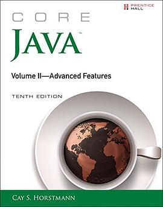
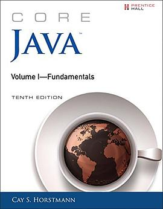
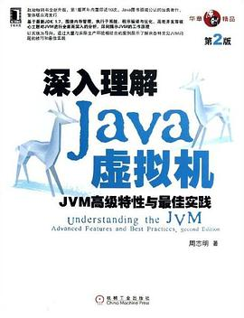

2019年9月
广播发布后不可编辑，所以每条都是那一刻的原话。
2019-09-29 08:49:17
 看过 光环：致远星的陷落 第一季 / Halo: The Fall of Reach Season 1 ★★★★☆
看过 光环：致远星的陷落 第一季 / Halo: The Fall of Reach Season 1 ★★★★☆
原来halo讲的是这个故事，难怪Xbox只靠halo就能撑起自家一片天，故事真棒
2019-09-28 17:09:50
 在玩 歧路旅人 オクトパストラベラー ★★★★★
在玩 歧路旅人 オクトパストラベラー ★★★★★
Xbox等不到了，ns等黑五再入，只能先上w10了
2019-09-22 13:48:56
看过 WiFi过敏的少女 / Ang babaeng allergic sa wifi ★★☆☆☆
什么片子啊。。。一个有意思的标题可以拍的这么无聊。。。被耐飞骗了
2019-09-20 23:57:44
2019-09-20 23:35:32
看过 命运/新章 最终回响 / Fate/EXTRA Last Encore ★★★☆☆
这个设定也来蹭赛博朋克的热度 =.= 画崩了这个很郁闷
2019-09-13 14:56:48
想读 格局
技术出生的写手，我还是很信任的
2019-09-13 14:54:31

不读啦
2019-09-13 14:54:13

还记得当时阿大图书馆里没有这本书，于是向学校图书馆提交购书申请，结果图书馆就真买了。不过一直没看完，讲的很细，但是没时间啃这个大块头。目前感觉也不会再需要啃Java了。非要啃一个编程语言的话，JavaScript这个是通用编程的未来，golang这个是大规模系统编程的未来，其他都可以随缘浅尝辄止。
2019-09-13 14:38:45
读过 Windows核心编程(第5版) ★★★★★
不想看了，和Windows未来应该没什么交集了。All in Fuhsia！ //学习内核编程很有挑战，寒假研读。
2019-09-13 14:35:56
 读过 Cracking the Coding Interview
读过 Cracking the Coding Interview
不想读了，因为面试过了：） //如果面试挂了，就开始读这本
2019-09-13 14:34:08
 读过 剑指Offer ★★★★★
读过 剑指Offer ★★★★★
2019-01-25 看完的，总体来说对我的面试非常有帮助了！ //第一本工作读物，上班摸鱼消磨时间必备：）
2019-09-13 08:25:39

继续回到想读列表吧，因为工作完全不需要用这方面知识，Google的新操作系统Fuchsia也使用dalvik，所以没必要纠结传统jvm了 //原评论：工作已趋于稳定，准备寻求新刺激
2019-09-13 08:23:46
想读 浪潮之巅 (第四版)
读最新版
2019-09-13 08:22:55
想读 谷歌方法
最近在看吴军的Google方法论，感觉突然对于这类思维性的书非常感兴趣。技术书已经不能满足我了
2019-09-07 21:52:40
看过 银魂2 / 銀魂2 掟は破るためにこそある ★★★★☆
说看就看，发现和大哥大的演员重合好多啊！亲切度++++
2019-09-07 18:29:18
因为桥本环奈！！！
2019-09-07 18:22:42
看过 四大名捕 ★★★★☆
这个我竟然也mark，也是在上映的时候看的，当时跟俩高中同学一起看的。说来好久没联系了唉，只能说出国有得有失叭
2019-09-06 20:38:04
我竟然没看过这部嘛？我当时记的好清楚看的影评说这部电影的福尔摩斯颠覆以往的形象，善于格斗
2019-09-06 20:27:49
在看 命运/新章 最终回响 / Fate/EXTRA Last Encore
Netflix上看的，感觉有点莫名其妙的设定，而且还画崩了
2019-09-06 20:25:45
玩过 幽灵行动：断点 Tom Clancy’s Ghost Recon: Breakpoint ★★★★☆
β测玩了一波，感觉节奏慢了很多（主要体现就是走路太慢），没有但是玩荒野爽
2019-09-02 11:46:58
 想看 罗小黑战记
想看 罗小黑战记